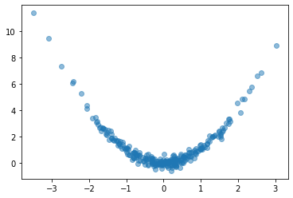

Table of Contents
Training a neural network is an optimization problem, the problem of minimizing its loss. The loss function \(Loss_X(w)\) of a neural network is the error of its predictions over a fixed dataset \(X\) as a function of the network’s weights or other parameters \(w\). The loss landscape is the graph of this function, a surface in some usually high-dimensional space. We can imagine the training of the network as a journey across this surface: Weight initialization drops us onto some random coordinates in the landscape, and then SGD guides us step-by-step along a path of parameter values towards a minimum. The success of our training depends on the shape of the landscape and also on our manner of stepping across it.
As a neural network typically has many parameters (hundreds or millions or more), this loss surface will live in a space too large to visualize. There are, however, some tricks we can use to get a good two-dimensional of it and so gain a valuable source of intuition. I learned about these from Visualizing the Loss Landscape of Neural Nets by Li, et al. (arXiv).
The Linear Case
Let’s start with the two-dimensional case to get an idea of what we’re looking for.
A single neuron with one input computes \(y = w x + b\) and so has only two parameters: a weight \(w\) for the input \(x\) and a bias \(b\). Having only two parameters means we can view every dimension of the loss surface with a simple contour plot, the bias along one axis and the single weight along the other:
After training this simple linear model, we’ll have a pair of weights \(w_c\) and \(b_c\) that should be approximately where the minimal loss occurs – it’s nice to take this point \((w_c, b_c)\) as the center of the plot. By collecting the weights at every step of training, we can trace out the path taken by SGD across the loss surface towards the minimum.
Our goal now is to get similar kinds of images for networks with any number of parameters.
Making Random Slices
How can we view the loss landscape of a larger network? Though we can’t anything like a complete view of the loss surface, we can still get a view as long as we don’t especially care what view we get; that is, we’ll just take a random 2D slice out of the loss surface and look at the contours that slice, hoping that it’s more or less representative.
This slice is basically a coordinate system: we need a center (the origin) and a pair of direction vectors (axes). As before, let’s take the weights \(W_c\) from the trainined network to act as the center, and the direction vectors we’ll generate randomly.
Now the loss at some point \((a, b)\) on the graph is taken by setting the weights of the network to \(W_c + a W_0 + b W_1\) and evaluating it on the given data. Plot these losses across some range of values for \(a\) and \(b\), and we can produce our contour plot.
We might worry that the plot would be distorted if the random vectors we chose happened to be close together, even though we’ve plotted them as if they were at a right angle. It’s a nice fact about high-dimensional vector spaces, though, that any two random vectors you choose from them will usually be close to orthogonal.
Here’s how we could implement this:
import matplotlib.pyplot as plt
import numpy as np
import tensorflow as tf
from tensorflow import keras
from tensorflow.keras import callbacks, layers
class RandomCoordinates(object):
def __init__(self, origin):
self.origin_ = origin
self.v0_ = normalize_weights(
[np.random.normal(size=w.shape) for w in origin], origin
)
self.v1_ = normalize_weights(
[np.random.normal(size=w.shape) for w in origin], origin
)
def __call__(self, a, b):
return [
a * w0 + b * w1 + wc
for w0, w1, wc in zip(self.v0_, self.v1_, self.origin_)
]
def normalize_weights(weights, origin):
return [
w * np.linalg.norm(wc) / np.linalg.norm(w)
for w, wc in zip(weights, origin)
]
class LossSurface(object):
def __init__(self, model, inputs, outputs):
self.model_ = model
self.inputs_ = inputs
self.outputs_ = outputs
def compile(self, range, points, coords):
a_grid = tf.linspace(-1.0, 1.0, num=points) ** 3 * range
b_grid = tf.linspace(-1.0, 1.0, num=points) ** 3 * range
loss_grid = np.empty([len(a_grid), len(b_grid)])
for i, a in enumerate(a_grid):
for j, b in enumerate(b_grid):
self.model_.set_weights(coords(a, b))
loss = self.model_.test_on_batch(
self.inputs_, self.outputs_, return_dict=True
)["loss"]
loss_grid[j, i] = loss
self.model_.set_weights(coords.origin_)
self.a_grid_ = a_grid
self.b_grid_ = b_grid
self.loss_grid_ = loss_grid
def plot(self, range=1.0, points=24, levels=20, ax=None, **kwargs):
xs = self.a_grid_
ys = self.b_grid_
zs = self.loss_grid_
if ax is None:
_, ax = plt.subplots(**kwargs)
ax.set_title("The Loss Surface")
ax.set_aspect("equal")
# Set Levels
min_loss = zs.min()
max_loss = zs.max()
levels = tf.exp(
tf.linspace(
tf.math.log(min_loss), tf.math.log(max_loss), num=levels
)
)
# Create Contour Plot
CS = ax.contour(
xs,
ys,
zs,
levels=levels,
cmap="magma",
linewidths=0.75,
norm=mpl.colors.LogNorm(vmin=min_loss, vmax=max_loss * 2.0),
)
ax.clabel(CS, inline=True, fontsize=8, fmt="%1.2f")
return ax
Let’s try it out. We’ll create a simple fully-connected network to fit a curve to this parabola:
# Create some data
NUM_EXAMPLES = 256
BATCH_SIZE = 64
x = tf.random.normal(shape=(NUM_EXAMPLES, 1))
err = tf.random.normal(shape=x.shape, stddev=0.25)
y = x ** 2 + err
y = tf.squeeze(y)
ds = (tf.data.Dataset
.from_tensor_slices((x, y))
.shuffle(NUM_EXAMPLES)
.batch(BATCH_SIZE))
plt.plot(x, y, 'o', alpha=0.5);

# Fit a fully-connected network (ie, a multi-layer perceptron)
model = keras.Sequential([
layers.Dense(64, activation='relu'),
layers.Dense(64, activation='relu'),
layers.Dense(64, activation='relu'),
layers.Dense(1)
])
model.compile(
loss='mse',
optimizer='adam',
)
history = model.fit(
ds,
epochs=200,
verbose=0,
)
# Look at fitted curve
grid = tf.linspace(-4, 4, 3000)
fig, ax = plt.subplots()
ax.plot(x, y, 'o', alpha=0.1)
ax.plot(grid, model.predict(grid).reshape(-1, 1), color='k')
Looks like we got an okay fit, so now we’ll look at a random slice from the loss surface:
# Create loss surface
coords = RandomCoordinates(model.get_weights())
loss_surface = LossSurface(model, x, y)
loss_surface.compile(points=30, coords=coords)
# Look at loss surface
plt.figure(dpi=100)
loss_surface.plot()
Improving the View
Getting a good plot of the path the parameters take during training requires one more trick. A path through a random slice of the landscape tends to show too little variation to get a good idea of how the training actually proceeded. A more representative view would show us the directions through which the parameters had the most variation. We want, in other words, the first two principal components of the collection of parameters assumed by the network during training.
from sklearn.decomposition import PCA
# Some utility functions to reshape network weights
def vectorize_weights_(weights):
vec = [w.flatten() for w in weights]
vec = np.hstack(vec)
return vec
def vectorize_weight_list_(weight_list):
vec_list = []
for weights in weight_list:
vec_list.append(vectorize_weights_(weights))
weight_matrix = np.column_stack(vec_list)
return weight_matrix
def shape_weight_matrix_like_(weight_matrix, example):
weight_vecs = np.hsplit(weight_matrix, weight_matrix.shape[1])
sizes = [v.size for v in example]
shapes = [v.shape for v in example]
weight_list = []
for net_weights in weight_vecs:
vs = np.split(net_weights, np.cumsum(sizes))[:-1]
vs = [v.reshape(s) for v, s in zip(vs, shapes)]
weight_list.append(vs)
return weight_list
def get_path_components_(training_path, n_components=2):
# Vectorize network weights
weight_matrix = vectorize_weight_list_(training_path)
# Create components
pca = PCA(n_components=2, whiten=True)
components = pca.fit_transform(weight_matrix)
# Reshape to fit network
example = training_path[0]
weight_list = shape_weight_matrix_like_(components, example)
return pca, weight_list
class PCACoordinates(object):
def __init__(self, training_path):
origin = training_path[-1]
self.pca_, self.components = get_path_components_(training_path)
self.set_origin(origin)
def __call__(self, a, b):
return [
a * w0 + b * w1 + wc
for w0, w1, wc in zip(self.v0_, self.v1_, self.origin_)
]
def set_origin(self, origin, renorm=True):
self.origin_ = origin
if renorm:
self.v0_ = normalize_weights(self.components[0], origin)
self.v1_ = normalize_weights(self.components[1], origin)
Having defined these, we’ll train a model like before but this time with a simple callback that will collect the weights of the model while it trains:
# Create data
ds = (
tf.data.Dataset.from_tensor_slices((inputs, outputs))
.repeat()
.shuffle(1000, seed=SEED)
.batch(BATCH_SIZE)
)
# Define Model
model = keras.Sequential(
[
layers.Dense(64, activation="relu", input_shape=[1]),
layers.Dense(64, activation="relu"),
layers.Dense(64, activation="relu"),
layers.Dense(1),
]
)
model.compile(
optimizer="adam", loss="mse",
)
training_path = [model.get_weights()]
# Callback to collect weights as the model trains
collect_weights = callbacks.LambdaCallback(
on_epoch_end=(
lambda batch, logs: training_path.append(model.get_weights())
)
)
history = model.fit(
ds,
steps_per_epoch=1,
epochs=40,
callbacks=[collect_weights],
verbose=0,
)
And now we can get a view of the loss surface more representative of where the optimization actually occurs:
# Create loss surface
coords = PCACoordinates(training_path)
loss_surface = LossSurface(model, x, y)
loss_surface.compile(points=30, coords=coords, range=0.2)
# Look at loss surface
loss_surface.plot(dpi=150)
Plotting the Optimization Path
All we’re missing now is the path the neural network weights took during training in terms of the transformed coordinate system. Given the weights \(W\) for a neural network, in other words, we need to find the values of \(a\) and \(b\) that correspond to the direction vectors we found via PCA and the origin weights \(W_c\).
\[W - W_c = a W_0 + b W_1\]
We can’t solve this using an ordinary inverse (the matrix \( \left[\begin{matrix} W_0 & W_1 \end{matrix} \right] \) isn’t square), so instead we’ll use the Moore-Penrose pseudoinverse, which will give us a least-squares optimal projection of \(W\) onto the coordinate vectors:
\[\left[\begin{matrix} W_0 & W_1 \end{matrix}\right]^+ (W - W_c) = (a, b)\]
This is the ordinary least squares solution to the equation above.
def weights_to_coordinates(coords, training_path):
"""Project the training path onto the first two principal components
using the pseudoinverse."""
components = [coords.v0_, coords.v1_]
comp_matrix = vectorize_weight_list_(components)
# the pseudoinverse
comp_matrix_i = np.linalg.pinv(comp_matrix)
# the origin vector
w_c = vectorize_weights_(training_path[-1])
# center the weights on the training path and project onto components
coord_path = np.array(
[
comp_matrix_i @ (vectorize_weights_(weights) - w_c)
for weights in training_path
]
)
return coord_path
def plot_training_path(coords, training_path, ax=None, end=None, **kwargs):
path = weights_to_coordinates(coords, training_path)
if ax is None:
fig, ax = plt.subplots(**kwargs)
colors = range(path.shape[0])
end = path.shape[0] if end is None else end
norm = plt.Normalize(0, end)
ax.scatter(
path[:, 0], path[:, 1], s=4, c=colors, cmap="cividis", norm=norm,
)
return ax
Applying these to the training path we saved means we can plot them along with the loss landscape in the PCA coordinates:
pcoords = PCACoordinates(training_path)
loss_surface = LossSurface(model, x, y)
loss_surface.compile(points=30, coords=pcoords, range=0.4)
ax = loss_surface.plot(dpi=150)
plot_training_path(pcoords, training_path, ax)
Comments powered by Talkyard.